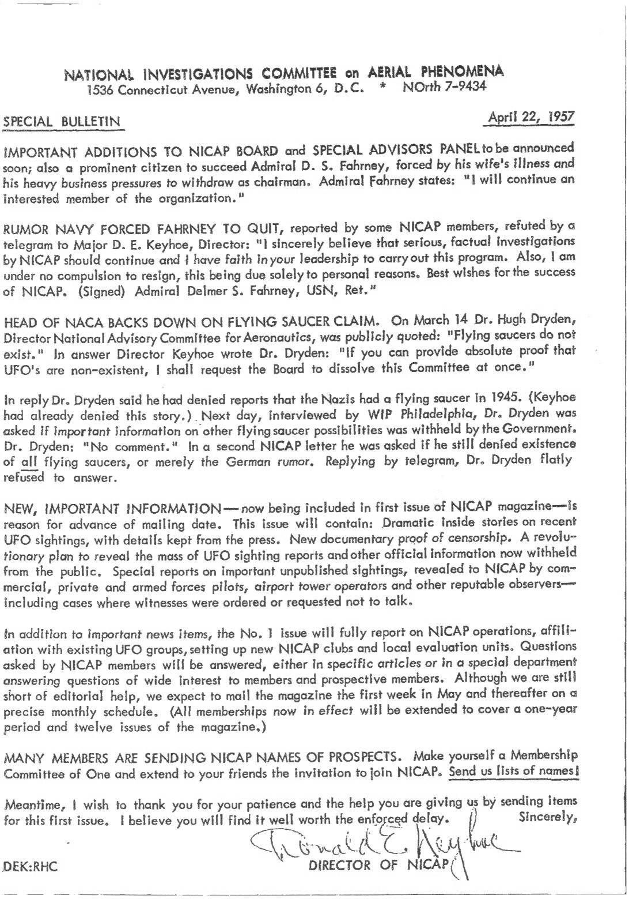

Bulletin Spécial du NICAP
Le bulletin d'origine

Ajouts importants au Comité du NICAP et au Panel des Conseillers Spéciaux
...à annoncer bientôt ; également un citoyen proéminent devant succéder à l'amiral D. S. Fahrney, forcé par la maladie de sa femme et ses lourdes charges
professionnelles de se retirer en tant que président. L'amiral Fahrney
déclare : Je continuerai comme membre intéressé de l'organisation
.
Rumeur que la Marine aurait forcé Fahrney à démissionner
...rapportée par certains membres du NICAP, et réfutée par un télégramme au major
D. E. Keyhoe, directeur: Je pense sincèrement que des enquêtes sérieuses
et factuelles du NICAP devraient se poursuivre et j'ai foi en votre leadership
pour mener à bien ce programme. Egalement, je ne fait l'objet d'aucune pression pour démissionner, ceci étant
uniquement dû à des raisons personnelles. Meilleurs vœux pour le succès du NICAP. (Signé) Amiral Delmer S. Fahrney,
USN, Ret
.
Le directeur du NACA revient sur ses déclarations sur les soucoupes volantes
Le 14 mars le Dr. Hugh Dryden, directeur du Comité de Conseil National sur l'Aéronautique, était publiquement cité : Les
soucoupes volantes n'existent pas
. En réponse le directeur Keyhoe écrivit
au Dr. Dryden: Si vous pouvez fournir la preuve absolue que les ovnis sont
inexistants, je demanderai au Comité de se dissoudre ce Comité d'un coup
.
En réponse le Dr. Dryden dit avoir contesté les histoires selon lesquelles les nazis avaient une soucoupe volante en
(Keyhoe avait aussi nié cette histoire). Le jour suivant,
interrogé par WIP Philadelphie, on demanda au Dr. Dryden si des informations importantes sur d'autres possibilités de soucoupes
volantes étaient détenues par le gouvernement. Le Dr. Dryden: Pas de
commentaires
. Dans une 2nde lettre du NICAP il lui fut demandé
s'il contestait toujours l'existence de toutes les soucoupes volantes, ou simplement la rumeur allemande. Répondant par télégramme, le Dr. Dryden refusa platement de répondre.
Nouvelles informations importantes
...actuellement incluses dans le 1er numéro du magazine du NICAP — est la raison de l'avance de la date
d'envoi. Ce numéro contiendra : des histoires dramatiques venant de l'intérieur sur des observations d'ovnis
récentes, avec des détails non divulgués à la presse. Une nouvelle preuve documentaire de la censure.
Un plan révolutionnaire pour révéler la masse de signalements d'observations d'ovnis et d'autres informations
officielles aujourd'hui cachées au public. Des signalements spéciaux sur d'importantes observations non publiées,
révélés au NICAP par des pilotescommerciaux, privés et des
forces armées, d'opérateurs de tour d'aéroport et autres observateurs de bonne réputation — y compris des cas
où on ordonna ou demanda aux témoins de ne pas parler.
En plus d'éléments d'actualités importants, le n° 1 fera un rapport sur les opérations du NICAP, l'affiliation avec d'autres groupes ufologiques, mettant en place de nouveaux
clubs du NICAP et unités d'évaluation locales. Les questions posées par des membres
du NICAP recevront des réponses, dans ses articles spécifiques ou dans un
département spécial répondant aux questions d'intérêt plus large aux membres et membres prospectifs. Bien que nous
manquions encore d'aide éditoriale, nous espérons envoyer le magazine la 1ère semaine de mai et par la
suite selon un plan mensuel précis (tous les adhésions aujourd'hui effectives seront étendues pour couvrir une
période de 1 an et 12 numéros du magazine).
De nombreux membres envoient au NICAP des noms de prospects
Constituez vous-mêmes un Comité de d'Adhésion de Un et étendez à vos amis l'invitation à rejoindre le NICAP. Envoyez-nous une liste de noms !
Dans le même temps, je souhaiterais vous remercier pour votre patience et l'aide que vous nous apportez en envoyez
des éléments pour ce 1er numéro. Je pense que vous trouverez que le délai forcé aura valu la peine.